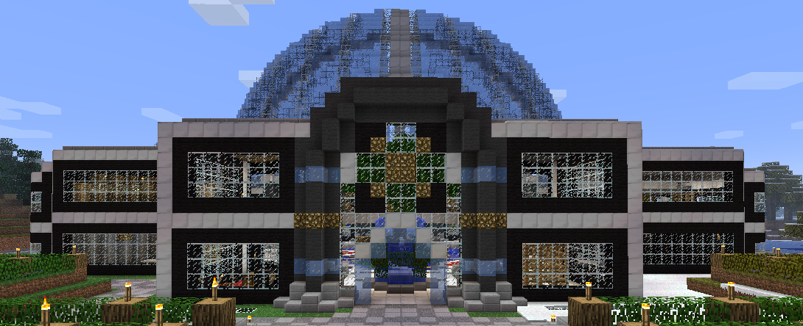
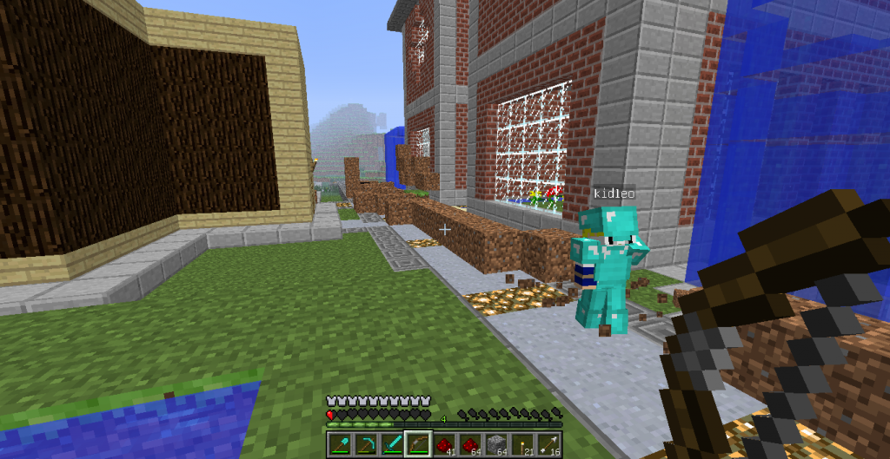

Dossier de reconstitution d'EltaCraft
Cette page condense les indices utilises pour reconstruire le site et l'environnement web du serveur: forum, captures Xooimage, ProPHP, CraftMyCMS, Starpass et traces d'infrastructure.
Cette page condense les indices utilises pour reconstruire le site et l'environnement web du serveur: forum, captures Xooimage, ProPHP, CraftMyCMS, Starpass et traces d'infrastructure.
Journee de deploiement web : domaine, hebergement ProPHP, FTP et mise en ligne du site.
Premiers transferts de plugins, configuration GroupManager, Essentials, Towny et JSONAPI.
Ouverture du forum Xooit et premiers liens entre site, forum, serveur et boutique.
 |
 |